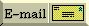

FAQs in section [35]:
[35.1] What's the idea behind templates?
A template is a cookie-cutter that specifies how to cut cookies that all look
pretty much the same (although the cookies can be made of various kinds of
dough, they'll all have the same basic shape). In the same way, a class
template is a cookie cutter for a description of how to build a family of
classes that all look basically the same, and a function template describes
how to build a family of similar looking functions.
Class templates are often used to build type safe containers (although this
only scratches the surface for how they can be used).
[ Top | Bottom | Previous section | Next section | Search the FAQ ]
[35.2] What's the syntax / semantics for a "class template"?
Consider a container class Array that acts like an array of integers:
// This would go into a header file such as "Array.h"
class Array {
public:
Array(int len=10) : len_(len), data_(new int[len]) { }
~Array() { delete[] data_; }
int len() const { return len_; }
const int& operator[](int i) const { return data_[check(i)]; } ← subscript operators often come in pairs
int& operator[](int i) { return data_[check(i)]; } ← subscript operators often come in pairs
Array(const Array&);
Array& operator= (const Array&);
private:
int len_;
int* data_;
int check(int i) const
{ if (i < 0 || i >= len_) throw BoundsViol("Array", i, len_);
return i; }
};
Repeating the above over and over for Array of float, of char, of
std::string, of Array-of-std::string, etc, will become tedious.
// This would go into a header file such as "Array.h"
template<typename T>
class Array {
public:
Array(int len=10) : len_(len), data_(new T[len]) { }
~Array() { delete[] data_; }
int len() const { return len_; }
const T& operator[](int i) const { return data_[check(i)]; }
T& operator[](int i) { return data_[check(i)]; }
Array(const Array<T>&);
Array<T>& operator= (const Array<T>&);
private:
int len_;
T* data_;
int check(int i) const
{ if (i < 0 || i >= len_) throw BoundsViol("Array", i, len_);
return i; }
};
Unlike template functions, template classes
(instantiations of class templates) need to be explicit about the parameters
over which they are instantiating:
int main()
{
Array<int> ai;
Array<float> af;
Array<char*> ac;
Array<std::string> as;
Array< Array<int> > aai;
...
}
Note the space between the two >'s in the last example. Without this
space, the compiler would see a >> (right-shift) token instead of two
>'s.
[ Top | Bottom | Previous section | Next section | Search the FAQ ]
[35.3] What's the syntax / semantics for a "function template"?
Consider this function that swaps its two integer arguments:
void swap(int& x, int& y)
{
int tmp = x;
x = y;
y = tmp;
}
If we also had to swap floats, longs, Strings, Sets, and FileSystems, we'd get
pretty tired of coding lines that look almost identical except for the type.
Mindless repetition is an ideal job for a computer, hence a function
template:
template<typename T>
void swap(T& x, T& y)
{
T tmp = x;
x = y;
y = tmp;
}
Every time we used swap() with a given pair of types, the compiler will go to
the above definition and will create yet another "template function" as an
instantiation of the above. E.g.,
int main()
{
int i,j; /*...*/ swap(i,j); // Instantiates a swap for int
float a,b; /*...*/ swap(a,b); // Instantiates a swap for float
char c,d; /*...*/ swap(c,d); // Instantiates a swap for char
std::string s,t; /*...*/ swap(s,t); // Instantiates a swap for std::string
...
}
Note: A "template function" is the instantiation of a "function template".
[ Top | Bottom | Previous section | Next section | Search the FAQ ]
[35.4] How do I explicitly select which version of a function template should get called?
When you call a function template, the compiler tries to deduce the
template type. Most of the time it can do that successfully, but every once
in a while you may want to help the compiler deduce the right type — either
because it cannot deduce the type at all, or perhaps because it would deduce
the wrong type.
For example, you might be calling a function template that doesn't have any
parameters of its template argument types, or you might want to force the
compiler to do certain promotions on the arguments before selecting the
correct function template. In these cases you'll need to explicitly tell the
compiler which instantiation of the function template should be called.
Here is a sample function template where the template parameter T does
not appear in the function's parameter list. In this case the compiler
cannot deduce the template parameter types when the function is
called.
template<typename T>
void f()
{
...
}
To call this function with T being an int or a std::string, you
could say:
#include <string>
void sample()
{
f<int>(); // type T will be int in this call
f<std::string>(); // type T will be std::string in this call
}
Here is another function whose template parameters appear in the function's
list of formal parameters (that is, the compiler can deduce the
template type from the actual arguments):
template<typename T>
void g(T x)
{
...
}
Now if you want to force the actual arguments to be promoted before the
compiler deduces the template type, you can use the above technique. E.g., if
you simply called g(42) you would get g<int>(42), but if you
wanted to pass 42 to g<long>(), you could say this:
g<long>(42). (Of course you could also promote the parameter
explicitly, such as either g(long(42)) or even g(42L), but
that ruins the example.)
Similarly if you said g("xyz") you'd end up calling
g<char*>(char*), but if you wanted to call the std::string
version of g<>() you could say g<std::string>("xyz"). (Again
you could also promote the argument, such as g(std::string("xyz")),
but that's another story.)
[ Top | Bottom | Previous section | Next section | Search the FAQ ]
[35.5] What is a "parameterized type"?
Another way to say, "class templates."
A parameterized type is a type that is parameterized over another type or some
value. List<int> is a type (List) parameterized over another type (int).
[ Top | Bottom | Previous section | Next section | Search the FAQ ]
[35.6] What is "genericity"?
Yet another way to say, "class templates."
Not to be confused with "generality" (which just means avoiding solutions which
are overly specific), "genericity" means class templates.
[ Top | Bottom | Previous section | Next section | Search the FAQ ]
[35.7] My template function does something special when the template type T is int or std::string; how do I write my template so it uses the special code when T is one of those specific types? New!
[Recently created thanks to Victor Bazarov (in 10/05). Click here to go to the next FAQ in the "chain" of recent changes.]
Before showing how to do this, let's make sure you're not shooting yourself in
the foot. Does the function's behavior appear different to your
users? In other words, is the observable behavior different in some
substantive way? If so, you're probably shooting yourself in the foot and you
will probably confuse your users — you're probably better off using
different functions with different names — don't use templates, don't use
overloading. For example, if the code for int inserts something into
a container and sorts the result, but the code for std::string removes
something from a container and does not sort the result, those two functions
ought not to be an overloaded pair — their observable behavior is
different so they ought to have different names.
However if the function's observable behavior is consistent for all the
T types with the differences limited to implementation details, then
you can proceed. Let's proceed with an example of this (conceptual only; not
C++):
template<typename T>
void foo(const T& x)
{
switch (typeof(T)) { ← conceptual only; not C++
case int:
... ← implementation details when T is int
break;
case std::string:
... ← implementation details when T is std::string
break;
default:
... ← implementation details when T is neither int nor std::string
break;
}
}
One way to implement the above is via template specialization. Instead of a
switch-statement, you end up breaking up the code into separate
functions. The first function is the default case — the code to be
used when T is anything other than int or std::string:
template<typename T>
void foo(const T& x)
{
... ← implementation details when T is neither int nor std::string
}
Next are the two specializations, first for the int case...
template<>
void foo<int>(const int& x)
{
... ← implementation details when T is int
}
...and next for the std::string case...
template<>
void foo<std::string>(const std::string& x)
{
... ← implementation details when T is std::string
}
That's it; you're done. The compiler will automagically select the correct
specialization when it sees which T you are using.
[ Top | Bottom | Previous section | Next section | Search the FAQ ]
[35.8] Huh? Can you provide an example of template specialization that doesn't use foo and bar? New!
[Recently created (in 10/05) and rewrote the last paragraph for clarity (in 3/06). Click here to go to the next FAQ in the "chain" of recent changes.]
Yes.
One of several ways I personally use template
specialization is for stringification. I usually use a template to
stringify various objects of various types,
but I often need to specialize the code for stringifying certain specific
types. For instance, when stringifying bools I prefer "true"
and "false" over "1" and "0" so I use
std::boolalpha when T is bool. Also I often prefer
floating point output to contain all the digits (so I can see very small
differences, etc.) so I use std::setprecision when T is a
floating point type. The end result usually looks something like this:
#include <iostream>
#include <sstream>
#include <iomanip>
#include <string>
#include <limits>
template<typename T> inline std::string stringify(const T& x)
{
std::ostringstream out;
out << x;
return out.str();
}
template<> inline std::string stringify<bool>(const bool& x)
{
std::ostringstream out;
out << std::boolalpha << x;
return out.str();
}
template<> inline std::string stringify<double>(const double& x)
{
const int sigdigits = std::numeric_limits<double>::digits10;
std::ostringstream out;
out << std::setprecision(sigdigits) << x;
return out.str();
}
template<> inline std::string stringify<float>(const float& x)
{
const int sigdigits = std::numeric_limits<float>::digits10;
std::ostringstream out;
out << std::setprecision(sigdigits) << x;
return out.str();
}
template<> inline std::string stringify<long double>(const long double& x)
{
const int sigdigits = std::numeric_limits<long double>::digits10;
std::ostringstream out;
out << std::setprecision(sigdigits) << x;
return out.str();
}
Conceptually they all do the same thing: stringify the parameter. That means
the observable behavior is consistent, therefore the specializations
do not confuse callers. However the details for implementing that observable
behavior is slightly different for bool and floating point types, so
template specialization is a good approach.
[ Top | Bottom | Previous section | Next section | Search the FAQ ]
[35.9] But most of the code in my template function is the same; is there some way to get the benefits of template specialization without duplicating all that source code? New!
[Recently created thanks to Victor Bazarov (in 10/05) and reworked the code-commentary to improve clarity (in 3/06). Click here to go to the next FAQ in the "chain" of recent changes.]
Yes.
For example, suppose your template function has a bunch of common code along
with a relatively small amount of T-specific code (conceptual only;
not C++):
template<typename T>
void foo(const T& x)
{
... common code that works for all T types ...
switch (typeof(T)) { ← conceptual only; not C++
case int:
... small amount of code used only when T is int ...
break;
case std::string:
... small amount of code used only when T is std::string ...
break;
default:
... small amount of code used when T is neither int nor std::string ...
break;
}
... more common code that works for all T types ...
}
If you blindly applied the advice from the FAQ
on template specialization, you would end up duplicating all that code
before and after the pseudo-switch statement. The way to get the best of both
worlds — to get the benefits of T-specific pieces without
duplicating the entire function, is to extract the pseudo-switch statement
portion into a separate function foo_part(), and
use template specialization on that
separate function:
template<typename T> inline void foo_part(const T& x)
{
... small amount of code used when T is neither int nor std::string ...
}
template<> inline void foo_part<int>(const int& x)
{
... small amount of code used only when T is int ...
}
template<> inline void foo_part<std::string>(const std::string& x)
{
... small amount of code used only when T is std::string ...
}
The main foo() function would be a simple template — no
specializations. Note that the pseudo-switch statement has been replaced by a
call to foo_part():
template<typename T>
void foo(const T& x)
{
... common code that works for all T types ...
foo_part(x);
... more common code that works for all T types ...
}
As you can see, the body of foo() now doesn't mention any particular
T. It all gets figured out automatically. The compiler generates
foo for you based on type T, and will generate the correctly
typed foo_part function based on the actual compile-time known type of
the x argument. Proper specializations of foo_part will be
instantiated.
[ Top | Bottom | Previous section | Next section | Search the FAQ ]
[35.10] All those templates and template specializations must slow down my program, right? New!
[Recently created thanks to Victor Bazarov (in 10/05). Click here to go to the next FAQ in the "chain" of recent changes.]
Wrong.
This is a quality-of-implementation issue so your results may vary. However
there is usually no slow-down at all. If anything, the templates might affect
the speed of compilation slightly, but once the types are resolved by the
compiler at compile-time, it will typically generate code that is just as fast
as with non-template functions, including inline-expanding appropriate
functions, etc.
[ Top | Bottom | Previous section | Next section | Search the FAQ ]
[35.11] So templates are overloading, right? New!
[Recently created thanks to Victor Bazarov (in 10/05). Click here to go to the next FAQ in the "chain" of recent changes.]
Yes and no.
Function templates participate in name resolution for overloaded functions,
but the rules are different. For a template to be considered in overload
resolution, the type has to match exactly. If the types do not match exactly,
the conversions are not considered and the template is simply dropped from the
set of viable functions. That's what is known as "SFINAE" — Substitution
Failure Is Not An Error. Example:
#include <iostream>
#include <typeinfo>
template<typename T> void foo(T* x)
{ std::cout << "foo<" << typeid(T).name() << ">(T*)\n"; }
void foo(int x)
{ std::cout << "foo(int)\n"; }
void foo(double x)
{ std::cout << "foo(double)\n"; }
int main()
{
foo(42); // matches foo(int) exactly
foo(42.0); // matches foo(double) exactly
foo("abcdef"); // matches foo<T>(T*) with T = char
return 0;
}
In this example, foo<T> cannot be considered for the first or the
second call to foo in the body of main because neither 42 nor
42.0 gives the compiler any information to deduce T. The third call,
however, includes foo<T> with T = char and it wins.
[ Top | Bottom | Previous section | Next section | Search the FAQ ]
[35.12] Why can't I separate the definition of my templates class from it's declaration and put it inside a .cpp file? Updated!
[Recently added some caveats and pointed people to the newly added FAQ on the export keyword (in 10/05). Click here to go to the next FAQ in the "chain" of recent changes.]
If all you want to know is how to fix this situation, read the
next
two FAQs. But
in order to understand why things are the way they are, first accept
these facts:
- A template is not a class or a function. A template is a
"pattern" that the compiler uses to generate a family of
classes or functions.
- In order for the compiler to generate the code, it must see
both the template definition (not just declaration) and the specific
types/whatever used to "fill in" the template. For example, if you're
trying to use a Foo<int>, the compiler must see both the Foo
template and the fact that you're trying to make a specific
Foo<int>.
- Your compiler probably doesn't remember the details of one
.cpp file while it is compiling another .cpp file. It
could, but most do not and if you are reading this FAQ, it
almost definitely does not. BTW this is called the "separate
compilation model."
Now based on those facts, here's an example that shows why things are the way
they are. Suppose you have a template Foo defined like this:
template<typename T>
class Foo {
public:
Foo();
void someMethod(T x);
private:
T x;
};
Along with similar definitions for the member functions:
template<typename T>
Foo<T>::Foo()
{
...
}
template<typename T>
void Foo<T>::someMethod(T x)
{
...
}
Now suppose you have some code in file Bar.cpp that uses
Foo<int>:
// Bar.cpp
void blah_blah_blah()
{
...
Foo<int> f;
f.someMethod(5);
...
}
Clearly somebody somewhere is going to have to use the "pattern" for
the constructor definition and for the someMethod() definition and
instantiate those when T is actually int. But if you had put the
definition of the constructor and someMethod() into file
Foo.cpp, the compiler would see the template code when it
compiled Foo.cpp and it would see Foo<int> when it
compiled Bar.cpp, but there would never be a time when it saw
both the template code and Foo<int>. So by rule #2 above, it
could never generate the code for Foo<int>::someMethod().
A note to the experts: I have obviously made several simplifications
above. This was intentional so please don't complain too loudly. If you know
the difference between a .cpp file and a compilation unit, the
difference between a class template and a template class, and the fact that
templates really aren't just glorified macros, then don't complain: this
particular question/answer wasn't aimed at you to begin with. I simplified
things so newbies would "get it," even if doing so offends some experts.
Reminder: Read the
next
two FAQs for
some solutions to this problem.
[ Top | Bottom | Previous section | Next section | Search the FAQ ]
[35.13] How can I avoid linker errors with my template functions? Updated!
[Recently added some caveats and pointed people to the newly added FAQ on the export keyword (in 10/05). Click here to go to the next FAQ in the "chain" of recent changes.]
Tell your C++ compiler which instantiations to make while it is compiling your
template function's .cpp file.
As an example, consider the header file foo.h which contains the
following template function declaration:
// File "foo.h"
template<typename T>
extern void foo();
Now suppose file foo.cpp actually defines that template function:
// File "foo.cpp"
#include <iostream>
#include "foo.h"
template<typename T>
void foo()
{
std::cout << "Here I am!\n";
}
Suppose file main.cpp uses this template function by calling
foo<int>():
// File "main.cpp"
#include "foo.h"
int main()
{
foo<int>();
...
}
If you compile and (try to) link these two .cpp files, most compilers will
generate linker errors. There are three solutions for this. The first
solution is to physically move the definition of the template function into
the .h file, even if it is not an inline function. This solution may
(or may not!) cause significant code bloat, meaning your executable size may
increase dramatically (or, if your compiler is smart enough, may not; try it
and see).
The other solution is to leave the definition of the template function in the
.cpp file and simply add the line template void foo<int>(); to that
file:
// File "foo.cpp"
#include <iostream>
#include "foo.h"
template<typename T> void foo()
{
std::cout << "Here I am!\n";
}
template void foo<int>();
If you can't modify foo.cpp, simply create a new .cpp file such as
foo-impl.cpp as follows:
// File "foo-impl.cpp"
#include "foo.cpp"
template void foo<int>();
Notice that foo-impl.cpp #includes a .cpp file, not a .h file.
If that's confusing, click your heels twice, think of Kansas, and repeat after
me, "I will do it anyway even though it's confusing." You can trust me on
this one. But if you don't trust me or are simply curious,
the rationale is given earlier.
[ Top | Bottom | Previous section | Next section | Search the FAQ ]
[35.14] How does the C++ keyword export help with template linker errors? New!
[Recently created thanks to Yechiel Kimchi (in 10/05). Click here to go to the next FAQ in the "chain" of recent changes.]
The C++ keyword export is designed to eliminate the need to
include a template definition
(either by providing the definition in the header file or by including the
implementation file). However, at the time of this writing, the only
well-known compiler that supports this capability is
Comeau C++. The
future of the export keyword is unknown. Without taking sides in the
debate, I will simply report that some compiler vendors are indicating they
might never implement it, and that the C++ standards committee has decided to
leave it in.
If you want your code to work with compilers that do not support the
export keyword, yet to also take advantage of the export
keyword with compilers that support it, define your template header-files like
this:
// File Foo.h
template<typename T>
class Foo {
...
};
#ifndef USE_EXPORT_KEYWORD
#include "Foo.cpp"
#endif
And define your non-inline functions in a source-file like this:
// File Foo.cpp
#ifndef USE_EXPORT_KEYWORD
#define export /*nothing*/
#endif
export template<typename T> ...
Then, if/when your compiler supports the export keyword, and if for
whatever reason you want to exploit that feature, just define the symbol
USE_EXPORT_KEYWORD.
The point is that you can program today as if your compiler has the
export keyword, and if/when your compiler actually does support that
keyword, undefine the NO_EXPORT_KEYWORD symbol, recompile, and you
will be exploiting that feature.
[ Top | Bottom | Previous section | Next section | Search the FAQ ]
[35.15] How can I avoid linker errors with my template classes?
Tell your C++ compiler which instantiations to make while it is compiling your
template class's .cpp file.
(If you've already read the previous FAQ, this answer is completely symmetric
with that one, so you can probably skip this answer.)
As an example, consider the header file Foo.h which contains the
following template class. Note that method Foo<T>::f() is inline and
methods Foo<T>::g() and Foo<T>::h() are not.
// File "Foo.h"
template<typename T>
class Foo {
public:
void f();
void g();
void h();
};
template<typename T>
inline
void Foo<T>::f()
{
...
}
Now suppose file Foo.cpp actually defines the non-inline
methods Foo<T>::g() and Foo<T>::h():
// File "Foo.cpp"
#include <iostream>
#include "Foo.h"
template<typename T>
void Foo<T>::g()
{
std::cout << "Foo<T>::g()\n";
}
template<typename T>
void Foo<T>::h()
{
std::cout << "Foo<T>::h()\n";
}
Suppose file main.cpp uses this template class by creating a
Foo<int> and calling its methods:
// File "main.cpp"
#include "Foo.h"
int main()
{
Foo<int> x;
x.f();
x.g();
x.h();
...
}
If you compile and (try to) link these two .cpp files, most compilers will
generate linker errors. There are three solutions for this. The first
solution is to physically move the definition of the template functions into
the .h file, even if they are not inline functions. This solution may
(or may not!) cause significant code bloat, meaning your executable size may
increase dramatically (or, if your compiler is smart enough, may not; try it
and see).
The other solution is to leave the definition of the template function in the
.cpp file and simply add the line template class Foo<int>; to that file:
// File "Foo.cpp"
#include <iostream>
#include "Foo.h"
...definition of Foo<T>::f() is unchanged -- see above...
...definition of Foo<T>::g() is unchanged -- see above...
template class Foo<int>;
If you can't modify Foo.cpp, simply create a new .cpp file such as
Foo-impl.cpp as follows:
// File "Foo-impl.cpp"
#include "Foo.cpp"
template class Foo<int>;
Notice that Foo-impl.cpp #includes a .cpp file, not a .h file.
If that's confusing, click your heels twice, think of Kansas, and repeat after
me, "I will do it anyway even though it's confusing." You can trust me on
this one. But if you don't trust me or are simply curious,
the rationale is given earlier.
If you are using Comeau
C++, you probably want to check out the export keyword.
[ Top | Bottom | Previous section | Next section | Search the FAQ ]
[35.16] Why do I get linker errors when I use template friends?
Ah, the intricacies of template friends. Here's an example of what people
often want to do:
#include <iostream>
template<typename T>
class Foo {
public:
Foo(const T& value = T());
friend Foo<T> operator+ (const Foo<T>& lhs, const Foo<T>& rhs);
friend std::ostream& operator<< (std::ostream& o, const Foo<T>& x);
private:
T value_;
};
Naturally the template will need to actually be used somewhere:
int main()
{
Foo<int> lhs(1);
Foo<int> rhs(2);
Foo<int> result = lhs + rhs;
std::cout << result;
...
}
And of course the various member and friend functions will need to be defined
somewhere:
template<typename T>
Foo<T>::Foo(const T& value = T())
: value_(value)
{ }
template<typename T>
Foo<T> operator+ (const Foo<T>& lhs, const Foo<T>& rhs)
{ return Foo<T>(lhs.value_ + rhs.value_); }
template<typename T>
std::ostream& operator<< (std::ostream& o, const Foo<T>& x)
{ return o << x.value_; }
The snag happens when the compiler sees the friend lines way up in the
class definition proper. At that moment it does not yet know the
friend functions are themselves templates; it assumes they are
non-templates like this:
Foo<int> operator+ (const Foo<int>& lhs, const Foo<int>& rhs)
{ ... }
std::ostream& operator<< (std::ostream& o, const Foo<int>& x)
{ ... }
When you call the operator+ or operator<< functions, this
assumption causes the compiler to generate a call to the non-template
functions, but the linker will give you an "undefined external" error because
you never actually defined those non-template functions.
The solution is to convince the compiler while it is examining the class
body proper that the operator+ and operator<< functions
are themselves templates. There are several ways to do this; one simple
approach is pre-declare each template friend function above the
definition of template class Foo:
template<typename T> class Foo; // pre-declare the template class itself
template<typename T> Foo<T> operator+ (const Foo<T>& lhs, const Foo<T>& rhs);
template<typename T> std::ostream& operator<< (std::ostream& o, const Foo<T>& x);
Also you add <> in the friend lines, as shown:
#include <iostream>
template<typename T>
class Foo {
public:
Foo(const T& value = T());
friend Foo<T> operator+ <> (const Foo<T>& lhs, const Foo<T>& rhs);
friend std::ostream& operator<< <> (std::ostream& o, const Foo<T>& x);
private:
T value_;
};
After the compiler sees that magic stuff, it will be better informed about the
friend functions. In particular, it will realize that the
friend lines are referring to functions that are themselves templates.
That eliminates the confusion.
Another approach is to define the friend function within the
class body at the same moment you declare it to be a friend. For
example:
#include <iostream>
template<typename T>
class Foo {
public:
Foo(const T& value = T());
friend Foo<T> operator+ (const Foo<T>& lhs, const Foo<T>& rhs)
{
...
}
friend std::ostream& operator<< (std::ostream& o, const Foo<T>& x)
{
...
}
private:
T value_;
};
[ Top | Bottom | Previous section | Next section | Search the FAQ ]
[35.17] How can any human hope to understand these overly verbose template-based error messages?
Here's a free tool that
transforms error messages
into something more understandable. At the time of this writing, it
works with the following compilers: Comeau C++, Intel C++, CodeWarrior C++,
gcc, Borland C++, Microsoft Visual C++, and EDG C++.
Here's an example showing some unfiltered gcc error messages:
rtmap.cpp: In function `int main()':
rtmap.cpp:19: invalid conversion from `int' to `
std::_Rb_tree_node<std::pair<const int, double> >*'
rtmap.cpp:19: initializing argument 1 of `std::_Rb_tree_iterator<_Val, _Ref,
_Ptr>::_Rb_tree_iterator(std::_Rb_tree_node<_Val>*) [with _Val =
std::pair<const int, double>, _Ref = std::pair<const int, double>&, _Ptr =
std::pair<const int, double>*]'
rtmap.cpp:20: invalid conversion from `int' to `
std::_Rb_tree_node<std::pair<const int, double> >*'
rtmap.cpp:20: initializing argument 1 of `std::_Rb_tree_iterator<_Val, _Ref,
_Ptr>::_Rb_tree_iterator(std::_Rb_tree_node<_Val>*) [with _Val =
std::pair<const int, double>, _Ref = std::pair<const int, double>&, _Ptr =
std::pair<const int, double>*]'
E:/GCC3/include/c++/3.2/bits/stl_tree.h: In member function `void
std::_Rb_tree<_Key, _Val, _KeyOfValue, _Compare, _Alloc>::insert_unique(_II,
_II) [with _InputIterator = int, _Key = int, _Val = std::pair<const int,
double>, _KeyOfValue = std::_Select1st<std::pair<const int, double> >,
_Compare = std::less<int>, _Alloc = std::allocator<std::pair<const int,
double> >]':
E:/GCC3/include/c++/3.2/bits/stl_map.h:272: instantiated from `void std::map<_
Key, _Tp, _Compare, _Alloc>::insert(_InputIterator, _InputIterator) [with _Input
Iterator = int, _Key = int, _Tp = double, _Compare = std::less<int>, _Alloc = st
d::allocator<std::pair<const int, double> >]'
rtmap.cpp:21: instantiated from here
E:/GCC3/include/c++/3.2/bits/stl_tree.h:1161: invalid type argument of `unary *
'
Here's what the filtered error messages look like (note: you can configure the
tool so it shows more information; this output was generated with settings to
strip things down to a minimum):
rtmap.cpp: In function `int main()':
rtmap.cpp:19: invalid conversion from `int' to `iter'
rtmap.cpp:19: initializing argument 1 of `iter(iter)'
rtmap.cpp:20: invalid conversion from `int' to `iter'
rtmap.cpp:20: initializing argument 1 of `iter(iter)'
stl_tree.h: In member function `void map<int,double>::insert_unique(_II, _II)':
[STL Decryptor: Suppressed 1 more STL standard header message]
rtmap.cpp:21: instantiated from here
stl_tree.h:1161: invalid type argument of `unary *'
Here is the source code to generate the above example:
#include <map>
#include <algorithm>
#include <cmath>
const int values[] = { 1,2,3,4,5 };
const int NVALS = sizeof values / sizeof (int);
int main()
{
using namespace std;
typedef map<int, double> valmap;
valmap m;
for (int i = 0; i < NVALS; i++)
m.insert(make_pair(values[i], pow(values[i], .5)));
valmap::iterator it = 100; // error
valmap::iterator it2(100); // error
m.insert(1,2); // error
return 0;
}
[ Top | Bottom | Previous section | Next section | Search the FAQ ]
[35.18] Why am I getting errors when my template-derived-class accesses something it inherited from its template-base-class?
Perhaps surprisingly, the following code is not valid C++, even though some compilers accept it:
template<typename T>
class B {
public:
void f() { }
};
template<typename T>
class D : public B<T> {
public:
void g()
{
f(); ← compiler might give an error here
}
};
This might hurt your head; better if you sit down.
Within D<T>::g(), the name f does not depend on template
parameter T, so f is known as a nondependent name.
B<T>, on the other hand, is dependent on template parameter T
so B<T> is called a dependent name.
Here's the rule: the compiler does not look in dependent base classes (like
B<T>) when looking up nondependent names (like f).
This doesn't mean that inheritance doesn't work. Class D<int> is
still derived from class B<int>, the compiler still lets you
implicitly do the is-a conversions (e.g., D<int>* to B<int>*),
dynamic binding still works when virtual functions are invoked, etc. But
there is an issue about how names are looked up.
Workarounds:
- Change the call from f() to this->f(). Since this
is always implicitly dependent in a template, this->f is dependent and
the lookup is therefore deferred until the template is actually instantiated,
at which point all base classes are considered.
- Insert using B<T>::f; just prior to calling f().
- Change the call from f() to B<T>::f(). Note however that
this might not give you what you want if f() is virtual, since it
inhibits the virtual dispatch mechanism.
[ Top | Bottom | Previous section | Next section | Search the FAQ ]
[35.19] Can the previous problem hurt me silently? Is it possible that the compiler will silently generate the wrong code?
Yes.
Since the non-dependent name f is not looked up in the dependent
base-class B<T>, the compiler will search the enclosing scope (such as
the enclosing namespace) for the name f. This can cause it to
silently(!) do the wrong thing.
For example:
void f() { } // a global ("namespace scope") function
template<typename T>
class B {
public:
void f() { }
};
template<typename T>
class D : public B<T> {
public:
void g()
{
f();
}
};
Here the call within D<T>::g() will silently(!) call ::f()
rather than B<T>::f().
You have been warned.
[ Top | Bottom | Previous section | Next section | Search the FAQ ]
 E-mail the author
[ C++ FAQ Lite
| Table of contents
| Subject index
| About the author
| ©
| Download your own copy ]
Revised Mar 1, 2006